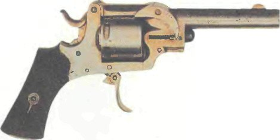

Револьвер Хилла

Хотя металлический патрон был очень важным изобретением, перезарядка первых револьверов проходила очень медленно. Сначала нужно было поставить курок на полувзвод, открыть зарядную дверцу, выдвинуть ось, по одной вытолкнуть стреляные гильзы и затем вставить новые патроны.
Предпринимались неоднократные попытки ускорения этого процесса. Револьвер, представленный здесь, относится к типу раскрывающихся и датируется примерно 1880 годом, но он более сложный, чем обычные раскрывающиеся револьверы, так как процесс выбрасывания гильз полностью автоматический.
Револьвер имеет две оси: одна (задняя) там, где верхняя часть рамки присоединена к неподвижной казенной части, а вторая (передняя) — где ствол соединен с рамкой. Последняя видна в центре рычага в форме полумесяца, и место сцепления спрятано за ним. Чтобы открыть оружие, нужно сначала нажать на плоский рычаг в нижней передней части рамки и потом приподнять ствол (вращая его вокруг задней оси).
Когда ствол находится в вертикальном положении, рычаг в форме полумесяца фиксируется. При последующем нажатии на ствол происходит поворот уже вокруг передней оси. Затем маленький выступ на передней части рамки, соединенный со стержнем экстрактора, входит в зацепление с рычагом в форме полумесяца и опускается вниз, выталкивая зубчатый экстрактор, который в свою очередь выталкивает стреляные гильзы.
Главная страница.